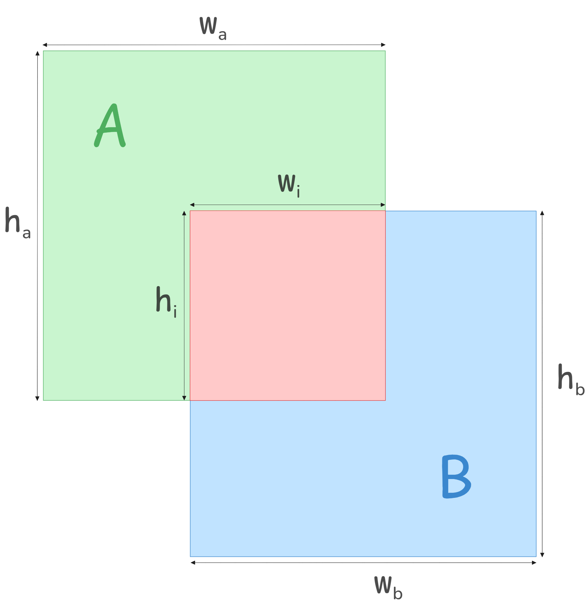

NMS¶
IOU¶
Intersection Over Union (IOU), also know as Jaccard Index, is a metric used to measure the overlap between two regions. It is defined as:
In object detection, Intersection over Union (IOU) is essential for assessing the accuracy of predicted bounding boxes against ground truth boxes. Models like SSD, Faster R-CNN, and YOLO incorporate IOU in their training pipelines to measure localization performance effectively.
Beyond evaluation, IOU plays a crucial role in Non-Maximum Suppression (NMS). By comparing IOU scores, NMS eliminates redundant detections, ensuring that only the most confident predictions are retained. This significantly enhances detection efficiency and reduces false positives.
IOU Calculation
{kind=link}

In the figure above, two overlapping boxes are shown: Box A (Green) and Box B (Blue). The intersection area is highlighted in Red.
Box A has a width of \(w_a\) and a height \(h_a\).
Box B has a width of \(w_b\) and a height \(h_b\).
The overlapping region (intersection area) has a width of \(w_i\) and a height of \(h_i\).
The IOU metric is calculated as:
Here, the numerator represents the intersection area, while the denominator accounts for the total area of both boxes, avoiding double-counting.
The Computational Challenge
While this formula precisely computes IOU, it requires three multiplications and one division. Division is particularly expensive in hardware compared to addition and subtraction, making direct IOU computation inefficient for real-time applications like object detection, where thousands of bounding boxes must be processed per frame. To address this, [Cha23] proposes an approximation based on perimeters rather than areas, significantly reducing the computational complexity while maintaining accuracy.
Perimeter-Based approximation
To avoid expensive division operations in hardware, we approximate the area using perimeters instead.
Defining Perimeters:
Perimeter of Box A:
Perimeter of Box B:
Perimeter of intersection:
We approximate the areas using squared perimeters:
\(\text{Area of Intersection} \approx (p_i)^2\)
\(\text{Area of Union} \approx (p_a + p_b - p_i)^2\)
Rewrite the IOU Condition
Taking Square Root on Both Sides
Let:
Substituting \(I'\) in the equation:
Moving the terms to one side:
Taking \(p_i\) common:
Dividing both sides by \((1 + I')\):
Substituting Perimeter Values
Here, \(I'\) is fixed and serves as a threshold for determining bounding box overlap using a computationally efficient perimeter-based method.
Why This Approximation
Eliminates Costly Operations
The original IOU formula involves three multiplications and one division, both of which are computationally expensive.
In contrast, the perimeter-based approximation relies only on addition, subtraction, and a precomputed multiplication (which can often be replaced with efficient bit-shifting).
Optimized for Hardware
Addition and subtraction are significantly faster than multiplication in hardware implementations.
The fixed value of \(I'\) enables further optimizations, reducing computational overhead.
Maintains Effectiveness for NMS
Despite being an approximation, this method preserves the relative ranking of overlapping boxes, ensuring that Non-Maximum Suppression (NMS) still functions effectively.
As demonstrated in [x], the accuracy loss is minimal, making this approach highly practical for real-time object detection.